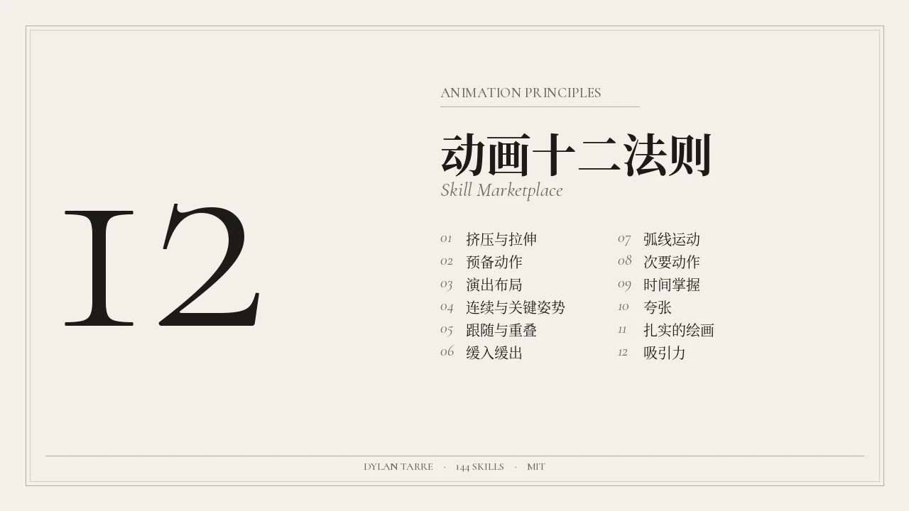

迪士尼的动画师在二十世纪三十年代，把「怎样让画出来的东西像活的」总结成十二条法则。Dylan Tarre 把这十二条写成 144 份 Claude Code 技能：按领域、角色、工具、情绪、界面元件和问题类型分成十二组，每组十二份。仓库名叫 Animation Principles Skill Marketplace，以 MIT 许可发布。它没有演示页，也没有样片，本身是一套给智能体读的指南。

这是什么
dylantarre/animation-principles 是 Dylan Tarre 做的一套 Claude Code 技能合集。README 的第一句是：「把迪士尼动画师的超能力交给 Claude。」它要教的不是某一种软件的操作步骤，而是那十二条被称作「动画原则」的观察：挤压与拉伸、预备动作、演出布局、缓入缓出、弧线，以及其余七条。
按照 README 的说法，无论你在做网页微交互、游戏动画、加载状态，还是更复杂的运动序列，这些技能都会给出带上下文的指引，根源是「让迪士尼动画成为经典的那些历久不变的法则」。仓库把它们编成十二组，每组十二份，一共 144 份。这个数字与仓库里的 SKILL.md 文件数相符。
技能写在 skills/ 目录，每份都是一篇带 YAML 头信息的 Markdown，说明这份技能什么时候该用、以及怎样把十二条法则用到那个具体场景里。同名的说明还会再生成一份到 docs/，方便人浏览。CLAUDE.md 则告诉 Claude Code 怎样在这个仓库里找技能。
仓库本身是文档型的，没有构建脚本，也没有附带可运行的演示。CHANGELOG 里把「视频教程与视觉示例」列在未来计划中。首次提交的说明写明，这份合集由 Claude Code 生成，并与 Claude Opus 4.5 合写。
十二条法则
README 把十二条法则列成一张表，并写明它们来自迪士尼动画师 Ollie Johnston 与 Frank Thomas，写在 1981 年的《生命的幻象：迪士尼动画》（The Illusion of Life: Disney Animation）里。法则本身在二十世纪三十年代就已整理成形。下面的中文名称是本页的译法，括号里保留英文原名。
| # | 法则 | 它做什么 |
|---|---|---|
| 1 | 挤压与拉伸（Squash & Stretch） | 用形变表现重量和弹性 |
| 2 | 预备动作（Anticipation） | 让观者先准备好即将发生的事 |
| 3 | 演出布局（Staging） | 把注意引到真正重要的地方 |
| 4 | 连续运动与关键姿势（Straight Ahead / Pose to Pose） | 两种创造运动的方法 |
| 5 | 跟随与重叠（Follow Through / Overlapping） | 各部分不以同一速度运动 |
| 6 | 缓入缓出（Slow In / Slow Out） | 自然的加速与减速 |
| 7 | 弧线运动（Arc） | 有机的弧形运动路径 |
| 8 | 次要动作（Secondary Action） | 用辅助运动去加强主动作 |
| 9 | 时间掌握（Timing） | 速度传达重量和情绪 |
| 10 | 夸张（Exaggeration） | 推过现实，换来更清楚的表达 |
| 11 | 扎实的绘画（Solid Drawing） | 保持体积和一致性 |
| 12 | 吸引力（Appeal） | 让人愿意看下去的魅力 |
「快速上手」那份技能还把十二条收成四组：要把运动做对，看时间掌握、弧线、缓入缓出、挤压与拉伸；要让它显得活，看跟随、重叠和次要动作；要让人一眼看懂，看演出布局和预备动作；要让它耐看，看吸引力、夸张和扎实的绘画。它给出的入门练习只有一个：做一只弹跳的球。这一下会同时练到时间、挤压与拉伸、弧线和缓入缓出。
怎么安装、怎么用
README 提供三种用法。
一种是作为 Claude Code 插件，写进设置：
{
"plugins": [
"animation-principles@github:dylantarre/animation-principles"
]
}一种是手动克隆到 Claude 的插件目录：
git clone https://github.com/dylantarre/animation-principles.git \
~/.claude/plugins/animation-principles也可以在对话里直接点名某份技能，例如：
Use the animation-principles:joy-delight skill for this celebration animation技能的调用格式是 animation-principles:<技能名>。README 给的快速入口包括：刚接触动画时用 absolute-beginner，前端开发用 frontend-developer，指定框架用如 framer-motion，排错用 implementation-debugging。
每一组里都有一份「通用」技能，作为没有更贴切选项时的退路，例如领域组的 universal-fallback、角色组的 universal-practitioner、工具组的 universal-tool。
技能怎样起作用
README 说，每份技能都在教 Claude 如何把十二条法则用到一个具体情境里。它举了三个例子：
joy-delight教的是庆祝时夸张的弹跳、彩纸和粒子的节奏、过冲的缓动曲线，以及什么时候该用俏皮的弹簧物理。fintech-banking教的是克制而可信的运动、不要弹跳的专业时长、能传达安全感的转场，以及金融场景里的无障碍要求。squash-stretch-mastery教的是这条法则背后的理论、保持体积的方法、何时可以破例，以及跨领域的用法。
以「挤压与拉伸」那份专攻技能为例：它把这条法则称为十二条里最重要的一条，理由是动画的根本困难在于让刚性的东西显得活着。核心约束是体积守恒——压扁时必须变宽，拉长时必须变窄；破坏这条约束，物体看起来就像在长大或缩小，而不是在变形。它还给出一个弹性谱系：橡皮球和卡通角色可以大幅变形，人脸和布料只需轻微变形，木头和金属也可以保留百分之一到二的微变形，以免显得死板、机械。用在界面上时，它建议按钮按下时高度收到百分之九十五到九十八，列表被拉过边界时稍稍拉长，通知到达时先压一下再弹回静止。
「网页动效」那份技能则把十二条直接映射到 CSS 和 JavaScript：挤压与拉伸用 transform: scale()，预备动作是动作开始前先反向走一点，缓入缓出写明不要对界面使用 linear，并给出常用的 cubic-bezier 曲线。性能方面，它要求尽量只动画 transform 和 opacity，慎用 will-change，并在低性能设备上检查。
这些写法是技能文本里的指导，仓库没有附对照样例或成片，本页也没有把它们当作已经验证过的效果。
十二组、一百四十四份
十二组的划分见仓库目录和 docs/index.md。下面是全部 144 份技能的中文对照，说明依据目录里的短句翻译。完整正文在仓库的 SKILL.md 里，本页只全文翻译其中三份，见附录 C。
1. 按应用领域 （By Domain）
| 技能 | 适合做什么 |
|---|---|
3d-spatial | 三维环境与空间界面 |
accessible-motion | 照顾无障碍需求的运动 |
brand-marketing | 用运动表达品牌 |
data-visualization | 图表与数据叙事 |
game-development | 游戏界面与角色动画 |
micro-interactions | 细小而令人愉快的界面瞬间 |
mobile-touch | 触控手势与移动端模式 |
page-transitions | 导航与视图转场 |
presentations | 幻灯与演示中的运动 |
video-motion-graphics | 影像与动态图形制作 |
web-motion-design | CSS 与 JavaScript 网页动画 |
universal-fallback | 通用领域参考 |
2. 按思维方式 （By Thinking Style）
| 技能 | 适合做什么 |
|---|---|
anticipation-payoff | 先蓄势，再兑现 |
attention-direction | 引导观者的目光 |
character-appeal | 做出让人想看的性格 |
emotional-narrative | 用运动讲故事 |
exaggerated-clarity | 往更清楚的方向推 |
naturalistic-motion | 贴近真实世界的物理 |
physics-intuition | 理解重量与力 |
problem-diagnosis | 排查动画问题 |
rhythm-pacing | 控制节奏与流动 |
spatial-thinking | 在三维空间里想问题 |
timing-mastery | 掌握时长与速度 |
universal-mindset | 通用思考方式 |
3. 按角色与身份 （By Role / Persona）
| 技能 | 适合做什么 |
|---|---|
accessibility-advocate | 把无障碍作为运动的前提 |
animator-traditional | 面向传统动画背景的人 |
brand-strategist | 把运动当作品牌表达 |
creative-director | 高层的运动方向 |
educator-teacher | 如何教授这些法则 |
filmmaker | 电影感的运动设计 |
frontend-developer | 从代码入手实现 |
game-designer | 互动游戏中的运动 |
motion-designer | 专业动效设计 |
product-manager | 产品决策里的运动 |
ux-researcher | 运动对体验的影响 |
universal-practitioner | 通用实践指南 |
4. 按熟练程度 （By Skill Level）
| 技能 | 适合做什么 |
|---|---|
absolute-beginner | 第一次接触这些法则 |
novice | 初步理解 |
quick-start | 快速上手 |
intermediate | 已经能稳定使用 |
advanced | 较深的理解 |
expert | 专业层面的掌握 |
master | 完整掌握 |
deep-dive | 系统深入 |
refresher | 给已经会的人快速复习 |
teaching-others | 怎样把法则教给别人 |
troubleshooting | 排查常见问题 |
universal-reference | 适合各水平的总参考 |
5. 按动画类型 （By Animation Type）
| 技能 | 适合做什么 |
|---|---|
attention-grabbers | 抓住注意 |
continuous-loops | 循环往复的动画 |
entrance-animations | 元素出现 |
exit-animations | 元素离开 |
feedback-indicators | 对用户操作的回应 |
gesture-responses | 触控与手势反馈 |
hover-interactions | 鼠标悬停效果 |
loading-states | 进度与加载 |
scroll-animations | 由滚动触发的运动 |
state-changes | 状态之间的过渡 |
transition-sequences | 多步转场 |
universal-patterns | 通用动画模式 |
6. 按情绪效果 （By Emotional Outcome）
| 技能 | 适合做什么 |
|---|---|
calm-relaxation | 平静、舒缓的运动 |
comfort-safety | 让人安心的动画 |
elegance-sophistication | 精致、偏高端的运动 |
excitement-energy | 高能量的动画 |
friendliness-approachability | 温暖、好接近的运动 |
joy-delight | 带来愉快与惊喜 |
playfulness-fun | 俏皮、有趣味的动画 |
power-confidence | 有力而自信的运动 |
professionalism-credibility | 可信、专业的运动 |
trust-reliability | 建立用户信心 |
urgency-action | 促使立刻行动 |
universal-emotion | 通用的情绪指引 |
7. 按界面元素 （By UI Element）
| 技能 | 适合做什么 |
|---|---|
accordions-dropdowns | 展开与收起 |
buttons-ctas | 按钮交互 |
cards-containers | 卡片式布局 |
carousels-sliders | 滑动内容 |
forms-inputs | 表单字段动画 |
icons-badges | 图标与徽章的运动 |
lists-grids | 列表与网格动画 |
loaders-spinners | 加载指示 |
modals-dialogs | 模态窗口 |
navigation-menus | 导航元素 |
notifications-toasts | 提醒与通知的运动 |
universal-elements | 通用元件模式 |
8. 按行业 （By Industry）
| 技能 | 适合做什么 |
|---|---|
e-commerce-retail | 购物与零售体验 |
education-learning | 教育平台 |
enterprise-b2b | 商务软件 |
fintech-banking | 金融服务 |
fitness-wellness | 健康与健身应用 |
gaming-entertainment | 游戏与娱乐 |
healthcare-medical | 医疗应用 |
media-publishing | 新闻与媒体 |
saas-productivity | SaaS 与效率工具 |
social-media | 社交平台 |
travel-hospitality | 旅行与预订 |
universal-industry | 跨行业指引 |
9. 按工具与框架 （By Tool / Framework）
| 技能 | 适合做什么 |
|---|---|
after-effects | Adobe After Effects |
anime-js | Anime.js |
css-native | 纯 CSS 动画 |
figma-prototyping | Figma 原型 |
framer-motion | Framer Motion（React） |
gsap-greensock | GSAP / GreenSock |
lottie-bodymovin | Lottie 动画 |
motion-one | Motion One |
popmotion | Popmotion |
react-spring | React Spring |
rive-animations | Rive 互动动画 |
universal-tool | 不依赖特定工具的指引 |
10. 按时长尺度 （By Time Scale）
| 技能 | 适合做什么 |
|---|---|
instant-0-100ms | 即时反馈（0–100 毫秒） |
micro-100-200ms | 微交互（100–200 毫秒） |
small-200-300ms | 小转场（200–300 毫秒） |
medium-300-500ms | 常规转场（300–500 毫秒） |
large-500-800ms | 较大的位移（500–800 毫秒） |
slow-800-1200ms | 缓慢、从容的运动（800–1200 毫秒） |
deliberate-1200-2000ms | 非常慢、有分量的运动（1200–2000 毫秒） |
dramatic-2000ms-plus | 戏剧性、电影感的时长（2000 毫秒以上） |
continuous-infinite | 持续或无限循环 |
orchestrated-sequences | 编排好的序列 |
responsive-adaptive | 可随情境调整的时长 |
universal-timing | 通用的时间指引 |
11. 按法则专攻 （By Principle Focus）
| 技能 | 适合做什么 |
|---|---|
squash-stretch-mastery | 挤压与拉伸 |
anticipation-mastery | 预备动作 |
staging-mastery | 演出布局 |
straight-ahead-pose-mastery | 连续运动与关键姿势 |
follow-through-overlapping | 跟随与重叠 |
slow-in-out-mastery | 缓入缓出 |
arc-mastery | 弧线运动 |
secondary-action-mastery | 次要动作 |
timing-principle-mastery | 时间掌握 |
exaggeration-mastery | 夸张 |
solid-drawing-mastery | 扎实的绘画 |
appeal-mastery | 吸引力 |
12. 按问题类型 （By Problem Type）
| 技能 | 适合做什么 |
|---|---|
timing-calibration | 校准时长 |
performance-optimization | 性能优化 |
accessibility-issues | 无障碍问题 |
motion-sickness | 运动眩晕 |
emotional-disconnect | 情绪对不上 |
brand-consistency | 品牌一致性 |
user-feedback-clarity | 反馈是否清楚 |
ux-friction | 体验上的阻力 |
attention-management | 注意力管理 |
technical-constraints | 技术限制 |
implementation-debugging | 实现与排错 |
universal-solutions | 通用解决办法 |
三份代表技能
144 份技能不宜全部放进一页，本页选了三份作为代表，附录 C 是它们的全文中译，附录 D 是英文原文：
quick-start：五分钟看完十二条，并给出那道弹跳球练习。squash-stretch-mastery：按法则专攻，把「挤压与拉伸」讲到可以应用到界面、角色、标志和游戏手感。web-motion-design：按应用领域，把十二条落到 CSS、JavaScript 和前端框架。
想按情绪来用，可以从 README 举过的 joy-delight 开始；想按行业来用，可以看 fintech-banking。完整列表见上一节。
许可与版本
仓库根目录的 LICENSE 是 MIT License，版权行是 Copyright (c) 2024 Dylan Tarre。README 同样写明 MIT。附录 E 收录许可证原文。
CHANGELOG 把 1.0.0 的发布日期写作 2024-12-30，并写明这是带 144 份技能的首次发布。仓库里两次提交的作者日期是 2025-12-30（太平洋时间）：第一次是首次发布，第二次是改了 README 里的两处表述。许可证版权行写的是 2024。本页核对的是提交 8359713（2026-11-27）。
CHANGELOG 的「未来计划」包括面向 Vue、Angular、Svelte 的框架技能、翻译、视频教程与视觉示例，以及社区贡献的行业技能。这些是仓库里写下的计划，不是已经完成的内容。
CONTRIBUTING.md 里有一处克隆地址仍是占位符 YOUR-USERNAME/animation-principles，真正的仓库地址是 dylantarre/animation-principles。
相关阅读
- 给智能体用的界面技艺：Emil Kowalski 的开源 AI Skills — 另一套把动效品味写成可安装技能的开源合集。
- Motion Prompt：把动画术语整理成喂给 AI 的动效库 — 用可动示例给动画术语起名字，再交给智能体实现。
- 「Cloud Pass」：用鱼眼和视差做出的无尽摩托骑行 — Meng To 把鱼眼、视差和天空写成三份 MIT 技能。
- Opus 5.5 动效实验室 — 把形容词换成数字，让 Claude 按工作室的方式做动画。
- Prompt Motion — Claude Opus 5.5 动态视频画廊，附提示词与 Skill。
- Lemo-Opuscar — 把电影风格写成技能和样片的开源库。
附录 A：README 全文中译
译文依据 2026-11-27 核对的 README.md（提交 8359713，MIT License）。徽章图片未转载。文内链接指向仓库原址。
动画法则技能市集
把迪士尼动画师的超能力交给 Claude。
这是一套共 144 份 Claude Code 技能的合集，用来讲授迪士尼动画十二法则，以及它们在各种情境、工具和场景里的用法。
这是什么？
这是一个面向 Claude Code 的技能市集，目的是让 Claude 成为迪士尼动画方面的专家。无论你在做界面微交互、游戏动画、加载状态，还是更复杂的运动序列，这些技能都会提供带上下文的指引，根基是让迪士尼动画成为经典的那些历久不变的法则。
一共有 12 组，每组 12 份技能。你可以用它在任何场景里给 Claude 加上动画的本事，也可以自己拿来学习。
十二条法则
| # | 法则 | 它做什么 |
|---|---|---|
| 1 | 挤压与拉伸 | 用形变表现重量和弹性 |
| 2 | 预备动作 | 让观者先准备好即将发生的事 |
| 3 | 演出布局 | 把注意引到真正重要的地方 |
| 4 | 连续运动与关键姿势 | 两种创造运动的方法 |
| 5 | 跟随与重叠 | 各部分不以同一速度运动 |
| 6 | 缓入缓出 | 自然的加速与减速 |
| 7 | 弧线运动 | 有机的弧形运动路径 |
| 8 | 次要动作 | 用辅助运动去加强主动作 |
| 9 | 时间掌握 | 速度传达重量和情绪 |
| 10 | 夸张 | 推过现实，换来更清楚的表达 |
| 11 | 扎实的绘画 | 保持体积和一致性 |
| 12 | 吸引力 | 让人愿意看下去的魅力 |
安装
Claude Code 插件
写进你的 Claude Code 设置：
{
"plugins": [
"animation-principles@github:dylantarre/animation-principles"
]
}手动安装
# 克隆到你的 Claude 插件目录
git clone https://github.com/dylantarre/animation-principles.git \
~/.claude/plugins/animation-principles直接使用
也可以在对话里直接引用技能：
Use the animation-principles:joy-delight skill for this celebration animation技能分类
按应用领域
| 技能 | 最适合 |
|---|---|
| web-motion-design | CSS/JS 网页动画 |
| mobile-touch | 触控手势、移动端模式 |
| game-development | 游戏界面与角色 |
| data-visualization | 图表与数据叙事 |
| micro-interactions | 细小而令人愉快的瞬间 |
按角色
| 技能 | 最适合 |
|---|---|
| frontend-developer | 以代码为先的实现 |
| motion-designer | 专业动效设计 |
| game-designer | 互动游戏中的运动 |
| creative-director | 高层方向 |
按工具 / 框架
| 技能 | 技术 |
|---|---|
| css-native | 纯 CSS 动画 |
| framer-motion | Framer Motion（React） |
| gsap-greensock | GSAP / GreenSock |
| react-spring | React Spring |
| lottie-bodymovin | Lottie 动画 |
按情绪效果
| 技能 | 带来什么 |
|---|---|
| joy-delight | 愉快与惊喜 |
| trust-reliability | 用户信心 |
| urgency-action | 立刻行动 |
| elegance-sophistication | 偏高端的感觉 |
按熟练程度
| 技能 | 水平 |
|---|---|
| absolute-beginner | 第一次介绍 |
| intermediate | 已经能工作的知识 |
| expert | 专业掌握 |
| teaching-others | 如何教别人 |
快速开始
刚接触动画？
Use animation-principles:absolute-beginner前端开发？
Use animation-principles:frontend-developer需要某个具体框架？
Use animation-principles:framer-motion在排查动画问题？
Use animation-principles:implementation-debugging技能如何工作
每份技能都在教 Claude 如何把十二条法则用到一个具体情境里。例如：
joy-delight 会教：
- 庆祝时夸张的弹跳
- 彩纸和粒子的节奏
- 过冲的缓动曲线
- 什么时候该用俏皮的弹簧物理
fintech-banking 会教：
- 克制而可信的运动
- 专业的时长（不要弹跳）
- 能传达安全感的转场
- 金融场景的无障碍要求
squash-stretch-mastery 会教：
- 这条法则背后的深层理论
- 保持体积的方法
- 何时可以破例
- 跨领域的应用
目录结构
animation-principles/
├── README.md
├── CLAUDE.md # Claude Code 的接入说明
├── LICENSE
├── CONTRIBUTING.md
├── CHANGELOG.md
├── skills/ # 技能源文件
│ ├── 01-by-domain/
│ ├── 02-by-thinking-style/
│ ├── 03-by-role-persona/
│ ├── 04-by-skill-level/
│ ├── 05-by-animation-type/
│ ├── 06-by-emotional-outcome/
│ ├── 07-by-ui-element/
│ ├── 08-by-industry/
│ ├── 09-by-tool-framework/
│ ├── 10-by-time-scale/
│ ├── 11-by-principle-focus/
│ └── 12-by-problem-type/
└── docs/ # 可供浏览的文档
└── index.md # 完整技能目录
贡献
欢迎贡献。指引见 CONTRIBUTING.md。
可以贡献的方向：
- 新的行业专项技能
- 更多框架的实现
- 翻译
- 缺陷修复与改进
许可
MIT License，详情见 LICENSE。
致谢
依据迪士尼动画师 Ollie Johnston 与 Frank Thomas 整理的动画十二法则，见《生命的幻象：迪士尼动画》（1981）。
为动画社区用心做成。
附录 B：README 英文原文
展开 README.md
# Animation Principles Skill Marketplace
**Give Claude the superpower of a Disney animator.**
A comprehensive collection of 144 Claude Code skills that teach Disney's 12 Principles of Animation and ways to apply them across every context, tool, and scenario imaginable.
[](./docs/index.md)
[](./docs/index.md)
[](./LICENSE)
---
## What is This?
This is a **skill marketplace** for Claude Code that transforms Claude into a Disney animation expert. Whether you're building UI micro-interactions, game animations, loading states, or complex motion sequences, these skills provide contextual guidance rooted in the timeless principles that made Disney animation legendary.
There are 12 sets of 12 skills each. Use this to give Claude animation powers in any scenario or to learn more yourself.
### The 12 Principles
| # | Principle | What It Does |
|---|-----------|--------------|
| 1 | **Squash & Stretch** | Shows weight and flexibility through deformation |
| 2 | **Anticipation** | Prepares the viewer for what's coming |
| 3 | **Staging** | Directs attention to what matters |
| 4 | **Straight Ahead / Pose to Pose** | Two approaches to creating movement |
| 5 | **Follow Through / Overlapping** | Parts move at different rates |
| 6 | **Slow In / Slow Out** | Natural acceleration and deceleration |
| 7 | **Arc** | Organic curved motion paths |
| 8 | **Secondary Action** | Supporting movements that reinforce |
| 9 | **Timing** | Speed conveys weight and emotion |
| 10 | **Exaggeration** | Push beyond reality for clarity |
| 11 | **Solid Drawing** | Maintain volume and consistency |
| 12 | **Appeal** | Charisma that draws viewers in |
---
## Installation
### Claude Code Plugin
Add to your Claude Code settings:
```json
{
"plugins": [
"animation-principles@github:dylantarre/animation-principles"
]
}
```
### Manual Installation
```bash
# Clone to your Claude plugins directory
git clone https://github.com/dylantarre/animation-principles.git \
~/.claude/plugins/animation-principles
```
### Direct Use
You can also reference skills directly in conversations:
```
Use the animation-principles:joy-delight skill for this celebration animation
```
---
## Skill Categories
### By Application Domain
| Skill | Best For |
|-------|----------|
| [web-motion-design](docs/01-by-domain/web-motion-design.md) | CSS/JS web animations |
| [mobile-touch](docs/01-by-domain/mobile-touch.md) | Touch gestures, mobile patterns |
| [game-development](docs/01-by-domain/game-development.md) | Game UI and characters |
| [data-visualization](docs/01-by-domain/data-visualization.md) | Charts and data storytelling |
| [micro-interactions](docs/01-by-domain/micro-interactions.md) | Small, delightful moments |
### By Role
| Skill | Best For |
|-------|----------|
| [frontend-developer](docs/03-by-role-persona/frontend-developer.md) | Code-first implementation |
| [motion-designer](docs/03-by-role-persona/motion-designer.md) | Professional motion design |
| [game-designer](docs/03-by-role-persona/game-designer.md) | Interactive game motion |
| [creative-director](docs/03-by-role-persona/creative-director.md) | High-level direction |
### By Tool/Framework
| Skill | Technology |
|-------|------------|
| [css-native](docs/09-by-tool-framework/css-native.md) | Pure CSS animations |
| [framer-motion](docs/09-by-tool-framework/framer-motion.md) | Framer Motion (React) |
| [gsap-greensock](docs/09-by-tool-framework/gsap-greensock.md) | GSAP/GreenSock |
| [react-spring](docs/09-by-tool-framework/react-spring.md) | React Spring |
| [lottie-bodymovin](docs/09-by-tool-framework/lottie-bodymovin.md) | Lottie animations |
### By Emotional Outcome
| Skill | Creates |
|-------|---------|
| [joy-delight](docs/06-by-emotional-outcome/joy-delight.md) | Happiness and surprise |
| [trust-reliability](docs/06-by-emotional-outcome/trust-reliability.md) | User confidence |
| [urgency-action](docs/06-by-emotional-outcome/urgency-action.md) | Immediate action |
| [elegance-sophistication](docs/06-by-emotional-outcome/elegance-sophistication.md) | Premium feel |
### By Skill Level
| Skill | Level |
|-------|-------|
| [absolute-beginner](docs/04-by-skill-level/absolute-beginner.md) | First introduction |
| [intermediate](docs/04-by-skill-level/intermediate.md) | Working knowledge |
| [expert](docs/04-by-skill-level/expert.md) | Professional mastery |
| [teaching-others](docs/04-by-skill-level/teaching-others.md) | How to teach |
[**View all 144 skills →**](docs/index.md)
---
## Quick Start
### New to Animation?
```
Use animation-principles:absolute-beginner
```
### Frontend Developer?
```
Use animation-principles:frontend-developer
```
### Need a Specific Framework?
```
Use animation-principles:framer-motion
```
### Debugging Animation Issues?
```
Use animation-principles:implementation-debugging
```
---
## How Skills Work
Each skill teaches Claude how to apply the 12 principles in a specific context. For example:
**`joy-delight`** teaches:
- Exaggerated bounces for celebrations
- Confetti and particle timing
- Overshoot easing curves
- When to use playful spring physics
**`fintech-banking`** teaches:
- Subtle, trustworthy motion
- Professional timing (no bounces)
- Security-conveying transitions
- Accessibility requirements for finance
**`squash-stretch-mastery`** teaches:
- Deep theory behind the principle
- Volume preservation techniques
- When to break the rules
- Cross-domain applications
---
## Directory Structure
```
animation-principles/
├── README.md
├── CLAUDE.md # Claude Code integration instructions
├── LICENSE
├── CONTRIBUTING.md
├── CHANGELOG.md
├── skills/ # Source skill files
│ ├── 01-by-domain/
│ ├── 02-by-thinking-style/
│ ├── 03-by-role-persona/
│ ├── 04-by-skill-level/
│ ├── 05-by-animation-type/
│ ├── 06-by-emotional-outcome/
│ ├── 07-by-ui-element/
│ ├── 08-by-industry/
│ ├── 09-by-tool-framework/
│ ├── 10-by-time-scale/
│ ├── 11-by-principle-focus/
│ └── 12-by-problem-type/
└── docs/ # Rendered documentation
└── index.md # Full skill directory
```
---
## Contributing
We welcome contributions! See [CONTRIBUTING.md](CONTRIBUTING.md) for guidelines.
**Ideas for contributions:**
- New industry-specific skills
- Additional framework implementations
- Translations
- Bug fixes and improvements
---
## License
MIT License - see [LICENSE](LICENSE) for details.
---
## Credits
Based on the 12 Principles of Animation developed by Disney animators Ollie Johnston and Frank Thomas, as documented in *The Illusion of Life: Disney Animation* (1981).
---
**Made with care for the animation community.**
附录 C：三份代表技能全文中译
译文依据 2026-11-27 核对的三份 SKILL.md（MIT License）。YAML 头信息保留原字段名，说明文字译成中文。
C.1 quick-start：五分钟看完十二条
源文件：skills/04-by-skill-level/quick-start/SKILL.md
---
name: Animation Principles - Quick Start
description: 需要在五分钟内迅速看完动画十二条法则时使用
---五分钟看完动画十二条法则
迪士尼的动画师在二十世纪三十年代整理出这些法则。直到今天，它们仍在定义什么是好的动画。
十二条法则（每条三十秒）
1. 挤压与拉伸
物体在撞击时压紧，在运动中拉长。弹跳的球落到地上会拍扁。它带来生命感和弹性。
2. 预备动作
动作开始前先蓄势。跳之前蹲一下。扔之前把手往后拉。让观者准备好即将发生的事。
3. 演出布局
把想法交代清楚。一个镜头只讲一件事。观者绝不该犹豫该看哪里。
4. 连续运动与关键姿势
两种动画方法。连续运动：一帧一帧地画，得到流畅而即兴的运动。关键姿势：先画关键帧，得到受控而有计划的动作。
5. 跟随与重叠动作
事物不会同时停住。头停了，头发还在动。不同部分以不同速度运动。
6. 缓入与缓出
运动有加速和减速。开头和结尾的画更多，中间更少。这会形成自然的重量感。
7. 弧线
自然的运动走弧线。手臂沿弧线摆动，头沿弧线转动。直线会显得机械。
8. 次要动作
增添层次的辅助运动。边走边吹口哨，边说边做手势。要增强，而不要抢戏。
9. 时间掌握
帧数等于速度和重量。帧越少，越快、越轻；帧越多，越慢、越重。
10. 夸张
把现实再往前推，换来更强的冲击。表情更大，姿势更有力。动画不是现实，而是被加强过的现实。
11. 扎实的绘画
用三维来思考。重量、平衡、解剖。即便是二维角色，也该让人觉得它有体积。
12. 吸引力
设计里的魅力。角色应该让人想看。形状清楚，比例好，特征分明。
快速对照分组
把运动做对：时间掌握、弧线、缓入缓出、挤压与拉伸
让它显得活：跟随、重叠、次要动作
让人一眼看懂：演出布局、预备动作
让它耐看：吸引力、夸张、扎实的绘画
入门只需要这一道练习
做一只弹跳的球。它会同时教你时间掌握、挤压与拉伸、弧线和缓入缓出。
C.2 squash-stretch-mastery：挤压与拉伸专攻
源文件：skills/11-by-principle-focus/squash-stretch-mastery/SKILL.md
---
name: squash-stretch-mastery
description: 在实现形变效果、弹跳动画、撞击反馈，或任何需要有机弹性和重量感的运动时使用。
---挤压与拉伸专攻
作为基础的那条法则
挤压与拉伸常被看作迪士尼十二条里最重要的一条，因为它解决了动画的根本问题：让刚性的物体显得活着。它在二十世纪三十年代于迪士尼发展起来，来自观察真实的皮肉和橡皮如何在受力时变形，同时保持体积不变。
核心理论
体积守恒：物体被压扁时必须变宽，被拉长时必须变窄。这一约束带来可信度——破坏它，物体看起来就会在长大或缩小，而不是在变形。
把力变成可见的：挤压与拉伸让看不见的力显形。球在撞击时压扁，让我们看见地面的阻力。角色在跳跃中途被拉长，揭示出速度和动量。
弹性谱系
不是所有物体都以同样的程度变形：
- 高弹性：橡皮球、卡通角色、果冻（大幅度变形）
- 中等弹性：人脸、布料、肌肉（轻微变形）
- 低弹性：木头、金属、骨骼（极小但仍然存在的微变形）
即便是「刚性」物体，也能从百分之一到二的变形中受益——它能避免那种死板、机械的感觉。
与其他法则的关系
时间掌握会放大挤压与拉伸：快速撞击需要更大幅度的挤压；缓慢的漂浮只需要轻轻拉长。形变的幅度必须与速度相符。
预备动作会用到拉伸：角色起跳前蓄力时，常常会先轻轻拉长一点。
跟随动作会把它延长：落地之后，挤压会传到次要部分（头发、衣服、皮肉）。
各领域的用法
界面 / 动效设计
- 按钮按下：轻微挤压（高度收到百分之九十五到九十八）
- 列表项：被拉过边界时稍稍拉长（橡皮筋式滚动）
- 通知：到达时先压一下，再弹回静止
角色动画
- 面部表情：微笑时面颊挤压，惊讶时拉伸
- 走路循环：触地时躯干压缩，经过时伸展
- 情绪节拍：极度拉伸表示震惊，挤压表示沮丧
标志动画
- 弹跳的标志：夸张的挤压带来俏皮的性格
- 轻微的呼吸：微小的挤压与拉伸让静止的标志保持活着
游戏手感
- 跳跃弧线：上升时拉伸，落地时挤压
- 受击反应：先短暂挤压，再把撞击感送到击退
- 可收集物：用温和的挤压与拉伸做有节奏的脉动
常见错误
- 破坏体积：物体看起来在长大或缩小，而不是在变形
- 均匀变形：真实物体在力作用的地方变形更大
- 用得过满：克制的场合只需要百分之一到五，而不是卡通式的百分之五十
- 极端值是静止的：形变应该缓入缓出，绝不要突然跳到极限
实现上的启发
有活力的运动从百分之十的形变开始，细微的打磨用百分之二到三。再按材质和语气调整。拿不准的时候，少即是多——挤压与拉伸应该被感觉到，而不是被有意识地看见。
C.3 web-motion-design：网页动效
源文件：skills/01-by-domain/web-motion-design/SKILL.md
---
name: web-motion-design
description: 在编写 CSS 动画、JavaScript 转场、React/Vue 运动，或任何基于浏览器的动画工作时使用。
---网页动效
把迪士尼动画十二条法则应用到 CSS、JavaScript 和前端框架。
快速对照
| 法则 | 网页上的实现 |
|---|---|
| 挤压与拉伸 | 在交互状态上使用 transform: scale() |
| 预备动作 | 动作开始前先轻微反向移动 |
| 演出布局 | 用运动的层次把注意集中到用户该看的地方 |
| 连续运动与关键姿势 | JavaScript 逐帧，对 CSS 关键帧 |
| 跟随与重叠 | 子元素错开动画，带弹性的缓动 |
| 缓入缓出 | ease-in-out、三次贝塞尔曲线 |
| 弧线运动 | motion-path，或贝塞尔位移变换 |
| 次要动作 | 阴影、光晕随主运动响应 |
| 时间掌握 | 时长：微交互 100–200 毫秒，常规 200–400 毫秒 |
| 夸张 | 缩放到超过 1.0，带过冲的动画 |
| 扎实的绘画 | 一致的 transform-origin，三维透视 |
| 吸引力 | 流畅的 60 帧，有目的的运动设计 |
法则的应用
挤压与拉伸：按钮按下时用 scaleY 压缩，悬停时用 scaleX 拉伸。保持体积不变——压缩 Y 时，稍微增大 X。
预备动作：展开下拉菜单前，先把它缩小百分之二到三。把内容向左滑出前，先向右移 5 像素。
演出布局：模态框获得焦点时，把背景元素调暗。用运动引导视线——先让重要的元素动起来。
连续运动与关键姿势：可预期、可重复的动画用 CSS @keyframes（关键姿势）。动态的、基于物理的运动用 JavaScript 或 GSAP（连续运动）。
跟随与重叠：子元素应在父元素停住之后再完成自己的运动。用递减的 animation-delay 做出自然的错开。
缓入缓出：界面运动不要使用 linear。常规缓动：cubic-bezier(0.4, 0, 0.2, 1)。进入：cubic-bezier(0, 0, 0.2, 1)。离开：cubic-bezier(0.4, 0, 1, 1)。
弧线运动：自然界的物体沿弧线运动，而不是直线。使用 offset-path，或把 X、Y 变换与不同的缓动组合起来。
次要动作：按钮的阴影在悬停时变大、变模糊。按钮缩放时，里面的图标同时旋转。背景粒子响应主元素。
时间掌握：微交互：100–200 毫秒。常规转场：200–400 毫秒。复杂序列：400–700 毫秒。页面转场：300–500 毫秒。
夸张：悬停缩放到 1.05–1.1，而不是 1.01。错误抖动移动 10–20 像素，而不是 2 像素。让运动可以被察觉，但不要刺眼。
扎实的绘画：保持一致的 transform-origin。用 perspective 做三维纵深。避免互相冲突、造成视觉毛刺的变换。
吸引力：以 60 帧为目标——尽可能只动画 transform 和 opacity。用自定义缓动曲线加入细微的性格。运动应该让人觉得是有意的。
代码模式
/* 带挤压与拉伸的弹性按钮 */
.button:active {
transform: scale(0.95, 1.05);
transition: transform 100ms cubic-bezier(0.4, 0, 0.2, 1);
}
/* 展开前的预备动作 */
.dropdown-enter {
animation: dropdown-open 300ms cubic-bezier(0.34, 1.56, 0.64, 1);
}
@keyframes dropdown-open {
0% { transform: scaleY(0.98); opacity: 0; }
100% { transform: scaleY(1); opacity: 1; }
}性能规则
- 为了 GPU 加速，只动画
transform和opacity - 谨慎使用
will-change，并在动画结束后去掉 - 运动可预期时，优先用 CSS 而不是 JavaScript
- 在低性能设备上测试
附录 D：三份代表技能英文原文
展开 quick-start / SKILL.md
---
name: Animation Principles - Quick Start
description: Use when someone needs a rapid overview of all 12 animation principles in under 5 minutes
---
# 12 Animation Principles in 5 Minutes
The Disney animators codified these principles in the 1930s. They still define quality animation today.
## The Principles (30 seconds each)
**1. Squash and Stretch**
Objects compress on impact, elongate in motion. A bouncing ball flattens when it hits ground. Gives life and flexibility.
**2. Anticipation**
Wind-up before action. Crouch before jump. Arm back before throw. Prepares the viewer for what's coming.
**3. Staging**
Present ideas clearly. One idea per shot. The viewer should never wonder where to look.
**4. Straight Ahead / Pose to Pose**
Two animation methods. Straight ahead: draw frame by frame for fluid, spontaneous motion. Pose to pose: draw key frames first for controlled, planned action.
**5. Follow Through / Overlapping Action**
Things don't stop all at once. Hair keeps moving after head stops. Different parts move at different rates.
**6. Slow In and Slow Out**
Movement accelerates and decelerates. More drawings at start and end, fewer in middle. Creates natural weight.
**7. Arc**
Natural motion follows curved paths. Arms swing in arcs. Heads turn in arcs. Straight lines feel robotic.
**8. Secondary Action**
Supporting movements that add richness. Walking while whistling. Talking while gesturing. Enhances without distracting.
**9. Timing**
Number of frames = speed and weight. Fewer frames = faster/lighter. More frames = slower/heavier.
**10. Exaggeration**
Push reality further for impact. Bigger expressions, more dynamic poses. Animation isn't reality - it's reality enhanced.
**11. Solid Drawing**
Three-dimensional thinking. Weight, balance, anatomy. Even 2D characters should feel like they have volume.
**12. Appeal**
Charisma in design. Characters should be interesting to watch. Clear shapes, good proportions, distinctive features.
## Quick Reference Groups
**Make it move right:** Timing, Arcs, Slow In/Out, Squash/Stretch
**Make it feel alive:** Follow Through, Overlapping, Secondary Action
**Make it read clearly:** Staging, Anticipation
**Make it compelling:** Appeal, Exaggeration, Solid Drawing
## The Only Exercise You Need to Start
Animate a bouncing ball. It teaches Timing, Squash/Stretch, Arcs, and Slow In/Out simultaneously.
展开 squash-stretch-mastery / SKILL.md
---
name: squash-stretch-mastery
description: Use when implementing deformation effects, bounce animations, impact responses, or any motion requiring organic elasticity and weight expression.
---
# Squash & Stretch Mastery
## The Foundation Principle
Squash and stretch is considered the most important of Disney's 12 principles because it solves animation's fundamental problem: making rigid objects feel alive. Developed in the 1930s at Disney, it emerged from observing how real flesh and rubber deform under force while maintaining constant volume.
## Core Theory
**Volume Preservation**: When an object squashes, it must widen. When it stretches, it must narrow. This constraint creates believability—violate it and objects appear to grow or shrink rather than deform.
**Force Visualization**: Squash and stretch makes invisible forces visible. A ball squashing on impact shows us the floor's resistance. A character stretching mid-leap reveals velocity and momentum.
## The Elasticity Spectrum
Not all objects deform equally:
- **High elasticity**: Rubber balls, cartoon characters, jelly (extreme deformation)
- **Medium elasticity**: Human faces, cloth, muscle (subtle deformation)
- **Low elasticity**: Wood, metal, bone (minimal but present micro-deformation)
Even "rigid" objects benefit from 1-2% deformation—it prevents the dead, mechanical feel.
## Interaction with Other Principles
**Timing amplifies squash/stretch**: Fast impacts demand more squash; slow floats need gentle stretch. The deformation amount must match velocity.
**Anticipation uses stretch**: A character winding up for a jump often stretches slightly before the motion begins.
**Follow-through extends it**: After landing, the squash ripples through secondary elements (hair, clothing, flesh).
## Domain Applications
### UI/Motion Design
- Button press: subtle squash (95-98% height) on tap
- List items: stretch slightly when pulled beyond bounds (rubber-band scroll)
- Notifications: squash on arrival, bounce to rest
### Character Animation
- Facial expressions: cheeks squash on smile, stretch on surprise
- Walk cycles: torso compresses on contact, extends on passing
- Emotional beats: extreme stretch for shock, squash for dejection
### Logo Animation
- Bouncing logos: exaggerated squash creates playful personality
- Subtle breathing: micro-squash/stretch keeps static logos alive
### Game Feel
- Jump arcs: stretch on ascent, squash on landing
- Hit reactions: brief squash sells impact before knockback
- Collectibles: rhythmic pulse using gentle squash/stretch
## Common Mistakes
1. **Breaking volume**: Objects appear to grow/shrink instead of deform
2. **Uniform deformation**: Real objects deform more where force is applied
3. **Over-application**: Subtle contexts need 1-5%, not cartoon 50%
4. **Static extremes**: Deformation should ease in/out, never snap
## Implementation Heuristic
Start with 10% deformation for energetic motions, 2-3% for subtle polish. Adjust based on material and tone. When in doubt, less is more—squash/stretch should be felt, not consciously noticed.
展开 web-motion-design / SKILL.md
---
name: web-motion-design
description: Use when building CSS animations, JavaScript transitions, React/Vue motion, or any browser-based animation work.
---
# Web Motion Design
Apply Disney's 12 animation principles to CSS, JavaScript, and frontend frameworks.
## Quick Reference
| Principle | Web Implementation |
|-----------|-------------------|
| Squash & Stretch | `transform: scale()` on interaction states |
| Anticipation | Slight reverse movement before action |
| Staging | Focus user attention with motion hierarchy |
| Straight Ahead / Pose to Pose | JS frame-by-frame vs CSS keyframes |
| Follow Through / Overlapping | Staggered child animations, elastic easing |
| Slow In / Slow Out | `ease-in-out`, cubic-bezier curves |
| Arc | `motion-path` or bezier translate transforms |
| Secondary Action | Shadows, glows responding to primary motion |
| Timing | Duration: micro 100-200ms, standard 200-400ms |
| Exaggeration | Scale beyond 1.0, overshoot animations |
| Solid Drawing | Consistent transform-origin, 3D perspective |
| Appeal | Smooth 60fps, purposeful motion design |
## Principle Applications
**Squash & Stretch**: Apply `scaleY` compression on button press, `scaleX` stretch on hover. Keep volume constant—if you compress Y, expand X slightly.
**Anticipation**: Before expanding a dropdown, shrink it 2-3% first. Before sliding content left, move it 5px right.
**Staging**: Dim background elements during modal focus. Use motion to direct eye flow—animate important elements first.
**Straight Ahead vs Pose to Pose**: Use CSS `@keyframes` for predictable, repeatable animations (pose to pose). Use JavaScript/GSAP for dynamic, physics-based motion (straight ahead).
**Follow Through & Overlapping**: Child elements should complete movement after parent stops. Use `animation-delay` with decreasing values for natural stagger.
**Slow In / Slow Out**: Never use `linear` for UI motion. Standard easing: `cubic-bezier(0.4, 0, 0.2, 1)`. Enter: `cubic-bezier(0, 0, 0.2, 1)`. Exit: `cubic-bezier(0.4, 0, 1, 1)`.
**Arc**: Elements in nature move in arcs, not straight lines. Use `offset-path` or combine X/Y transforms with different easings.
**Secondary Action**: Button shadow grows/blurs on hover. Icon inside button rotates while button scales. Background particles respond to primary element.
**Timing**: Micro-interactions: 100-200ms. Standard transitions: 200-400ms. Complex sequences: 400-700ms. Page transitions: 300-500ms.
**Exaggeration**: Hover states scale to 1.05-1.1, not 1.01. Error shakes move 10-20px, not 2px. Make motion noticeable but not jarring.
**Solid Drawing**: Maintain consistent `transform-origin`. Use `perspective` for 3D depth. Avoid conflicting transforms that create visual glitches.
**Appeal**: Target 60fps—use `transform` and `opacity` only when possible. Add subtle personality through custom easing curves. Motion should feel intentional.
## Code Patterns
```css
/* Elastic button with squash/stretch */
.button:active {
transform: scale(0.95, 1.05);
transition: transform 100ms cubic-bezier(0.4, 0, 0.2, 1);
}
/* Anticipation before expansion */
.dropdown-enter {
animation: dropdown-open 300ms cubic-bezier(0.34, 1.56, 0.64, 1);
}
@keyframes dropdown-open {
0% { transform: scaleY(0.98); opacity: 0; }
100% { transform: scaleY(1); opacity: 1; }
}
```
## Performance Rules
1. Animate only `transform` and `opacity` for GPU acceleration
2. Use `will-change` sparingly and remove after animation
3. Prefer CSS over JavaScript when animation is predictable
4. Test on low-powered devices
附录 E：LICENSE（MIT）原文
展开 LICENSE
MIT License
Copyright (c) 2024 Dylan Tarre
Permission is hereby granted, free of charge, to any person obtaining a copy
of this software and associated documentation files (the "Software"), to deal
in the Software without restriction, including without limitation the rights
to use, copy, modify, merge, publish, distribute, sublicense, and/or sell
copies of the Software, and to permit persons to whom the Software is
furnished to do so, subject to the following conditions:
The above copyright notice and this permission notice shall be included in all
copies or substantial portions of the Software.
THE SOFTWARE IS PROVIDED "AS IS", WITHOUT WARRANTY OF ANY KIND, EXPRESS OR
IMPLIED, INCLUDING BUT NOT LIMITED TO THE WARRANTIES OF MERCHANTABILITY,
FITNESS FOR A PARTICULAR PURPOSE AND NONINFRINGEMENT. IN NO EVENT SHALL THE
AUTHORS OR COPYRIGHT HOLDERS BE LIABLE FOR ANY CLAIM, DAMAGES OR OTHER
LIABILITY, WHETHER IN AN ACTION OF CONTRACT, TORT OR OTHERWISE, ARISING FROM,
OUT OF OR IN CONNECTION WITH THE SOFTWARE OR THE USE OR OTHER DEALINGS IN THE
SOFTWARE.